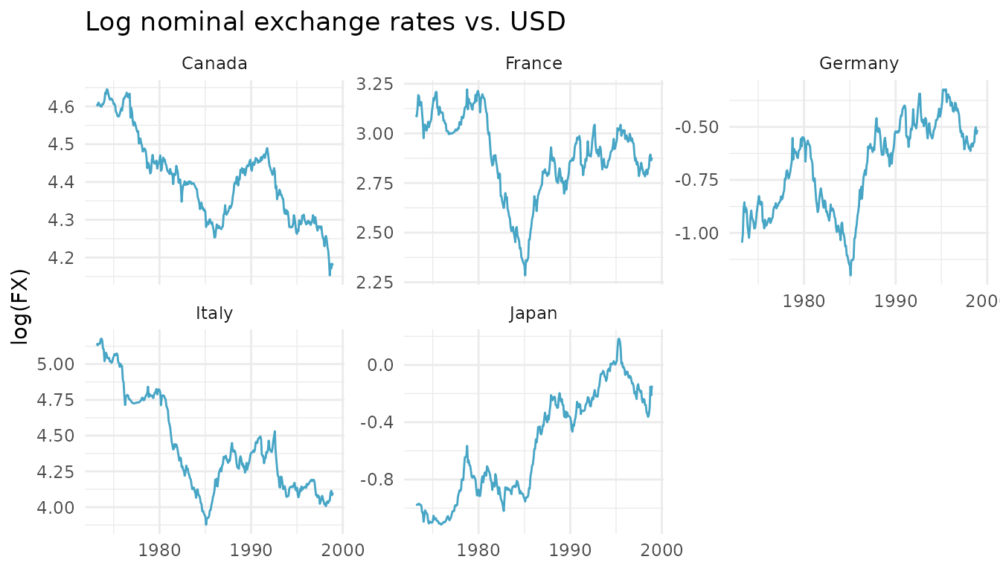
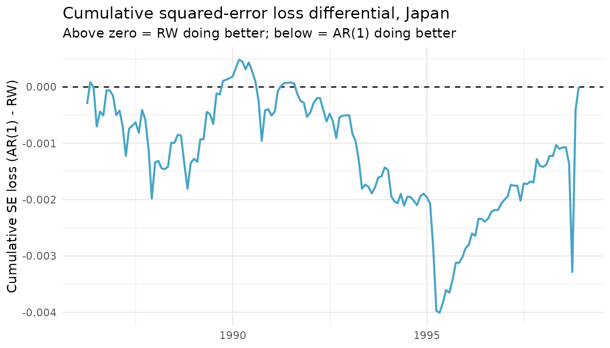

This article replicates the out-of-sample Diebold-Mariano
panel of Table 1 in Rossi (2006), “Are exchange rates
really random walks? Some evidence robust to parameter instability”
(Macroeconomic Dynamics, 10(1), 20-38), using
dm_test() from forecastdom and the bundled
rossi2006 dataset.
The exercise is the classical Meese-Rogoff (1983) question: at the monthly horizon, can a small linear AR model of exchange-rate returns beat a driftless random walk out of sample?
library(forecastdom)
library(ggplot2)
data(rossi2006)The data
Five bilateral nominal exchange rates against the U.S. dollar (Canada, France, Germany, Italy, Japan), monthly from March 1973 to December 1998 – 310 observations per country.
ggplot(rossi2006, aes(date, log(fx))) +
geom_line(colour = "#47A5C5") +
facet_wrap(~ country, scales = "free_y") +
labs(x = NULL, y = "log(FX)",
title = "Log nominal exchange rates vs. USD") +
theme_minimal(base_size = 11)
Forecasting setup
Let denote the log exchange rate and its monthly return. Two competing one-step-ahead forecasts of :
- Benchmark – driftless random walk: .
- Alternative – AR(p): , with coefficients re-estimated each period.
Following Rossi, both AR(1) and AR(2) start from the same usable sample of returns. The first are used to fit the initial model and the remaining are evaluated out of sample. Three estimation schemes are considered:
- Split – coefficients estimated once on and held fixed.
- Recursive – coefficients re-estimated each period using all available data.
- Rolling – coefficients re-estimated each period using the most recent observations.
forecast_oos <- function(log_fx, p, scheme = c("split", "recursive", "rolling")) {
scheme <- match.arg(scheme)
T_full <- length(log_fx)
dy <- diff(log_fx)
Y <- dy[3:(T_full - 1)]
L1 <- dy[2:(T_full - 2)]
L2 <- dy[1:(T_full - 3)]
Xm <- if (p == 1) matrix(L1, ncol = 1) else cbind(L1, L2)
n_obs <- length(Y)
R <- as.integer(ceiling(n_obs / 2))
P_oos <- n_obs - R
e_alt <- numeric(P_oos)
e_bench <- numeric(P_oos)
for (j in seq_len(P_oos)) {
idx <- switch(scheme,
split = seq_len(R),
recursive = seq_len(R + j - 1),
rolling = j:(R + j - 1)
)
Z <- cbind(1, Xm[idx, , drop = FALSE])
b <- as.numeric(solve(crossprod(Z), crossprod(Z, Y[idx])))
pred <- as.numeric(c(1, Xm[R + j, ]) %*% b)
e_alt[j] <- Y[R + j] - pred
e_bench[j] <- Y[R + j]
}
list(e_bench = e_bench, e_alt = e_alt, P = P_oos)
}Replicating the OOS DM panel of Table 1
We use dm_test() with correction = FALSE to
match Rossi’s asymptotic
reference distribution. Rossi defines the loss differential as
,
so a positive DM statistic means the random walk has lower
MSFE. To reproduce her sign we pass the AR errors as e1 and
the random-walk errors as e2.
countries <- levels(rossi2006$country)
schemes <- c("split", "recursive", "rolling")
run_panel <- function(p) {
out <- expand.grid(country = countries, scheme = schemes,
stringsAsFactors = FALSE)
out$DM <- NA_real_
out$DM_p <- NA_real_
for (i in seq_len(nrow(out))) {
log_fx <- log(subset(rossi2006, country == out$country[i])$fx)
fc <- forecast_oos(log_fx, p = p, scheme = out$scheme[i])
res <- dm_test(fc$e_alt, fc$e_bench,
alternative = "two.sided", correction = FALSE)
out$DM[i] <- res$statistic
out$DM_p[i] <- res$pvalue
}
out$cell <- sprintf("%.2f (%.2f)", out$DM, out$DM_p)
wide <- reshape(out[, c("country", "scheme", "cell")],
idvar = "scheme", timevar = "country", direction = "wide")
names(wide) <- gsub("^cell\\.", "", names(wide))
wide
}AR(1)
knitr::kable(run_panel(1), row.names = FALSE,
caption = "$DM_T$ statistic ($p$-value), AR(1) vs. RW")| scheme | Canada | France | Germany | Italy | Japan |
|---|---|---|---|---|---|
| split | 0.87 (0.38) | 1.38 (0.17) | -0.89 (0.38) | 0.80 (0.42) | -0.53 (0.60) |
| recursive | 1.16 (0.25) | 2.24 (0.03) | 0.14 (0.89) | 0.77 (0.44) | 0.00 (1.00) |
| rolling | 2.15 (0.03) | 1.77 (0.08) | 0.93 (0.35) | 0.60 (0.55) | 0.39 (0.69) |
AR(2)
knitr::kable(run_panel(2), row.names = FALSE,
caption = "$DM_T$ statistic ($p$-value), AR(2) vs. RW")| scheme | Canada | France | Germany | Italy | Japan |
|---|---|---|---|---|---|
| split | 1.97 (0.05) | 1.91 (0.06) | -0.03 (0.98) | 0.72 (0.47) | -0.64 (0.52) |
| recursive | 1.94 (0.05) | 1.71 (0.09) | 0.37 (0.71) | 0.73 (0.47) | 0.04 (0.97) |
| rolling | 2.29 (0.02) | 1.74 (0.08) | 0.79 (0.43) | 0.75 (0.45) | 0.41 (0.68) |
These cells reproduce the OOS DM panel of Rossi (2006) Table 1 exactly. The statistics are typically positive – the random walk has lower MSFE than the AR model – with two-sided p-values rarely below 5%, the classical Meese-Rogoff finding.
Single-country deep dive: Japan, AR(1), recursive
log_fx_jp <- log(subset(rossi2006, country == "Japan")$fx)
fc_jp <- forecast_oos(log_fx_jp, p = 1, scheme = "recursive")
dm_test(fc_jp$e_alt, fc_jp$e_bench, alternative = "two.sided", correction = FALSE)
#>
#> ╭────────────────────────────────────────────────────╮
#> │ Diebold-Mariano Test (1995) │
#> ├────────────────────────────────────────────────────┤
#> │ H0: Equal predictive ability │
#> │ H1: Methods have different predictive ability │
#> ├┄┄┄┄┄┄┄┄┄┄┄┄┄┄┄┄┄┄┄┄┄┄┄┄┄┄┄┄┄┄┄┄┄┄┄┄┄┄┄┄┄┄┄┄┄┄┄┄┄┄┄┄┤
#> │ Test Results: │
#> │ DM statistic: 0.0001 │
#> │ P-value: 0.9999 │
#> ├┄┄┄┄┄┄┄┄┄┄┄┄┄┄┄┄┄┄┄┄┄┄┄┄┄┄┄┄┄┄┄┄┄┄┄┄┄┄┄┄┄┄┄┄┄┄┄┄┄┄┄┄┤
#> │ Details: │
#> │ Observations (n): 153 │
#> │ Forecast horizon (h): 1 │
#> │ Loss function: SE │
#> │ Reference distribution: N(0,1) │
#> ╰────────────────────────────────────────────────────╯The cumulative squared-error differential – using Rossi’s sign convention so that positive means the random walk is winning – shows the AR’s edge is concentrated in narrow sub-samples rather than uniform across the OOS period:
loss_diff <- fc_jp$e_alt^2 - fc_jp$e_bench^2
oos_dates <- tail(unique(rossi2006$date), fc_jp$P)
ggplot(data.frame(date = oos_dates, cum = cumsum(loss_diff)),
aes(date, cum)) +
geom_hline(yintercept = 0, linetype = "dashed") +
geom_line(colour = "#47A5C5", linewidth = 0.8) +
labs(x = NULL,
y = "Cumulative SE loss (AR(1) - RW)",
title = "Cumulative squared-error loss differential, Japan",
subtitle = "Above zero = RW doing better; below = AR(1) doing better") +
theme_minimal(base_size = 11)
References
- Diebold, F. X. and Mariano, R. S. (1995). Comparing predictive accuracy. Journal of Business & Economic Statistics, 13(3), 253-263.
- Meese, R. A. and Rogoff, K. (1983). Empirical exchange rate models of the seventies: Do they fit out of sample? Journal of International Economics, 14(1-2), 3-24.
- Rossi, B. (2006). Are exchange rates really random walks? Some evidence robust to parameter instability. Macroeconomic Dynamics, 10(1), 20-38.